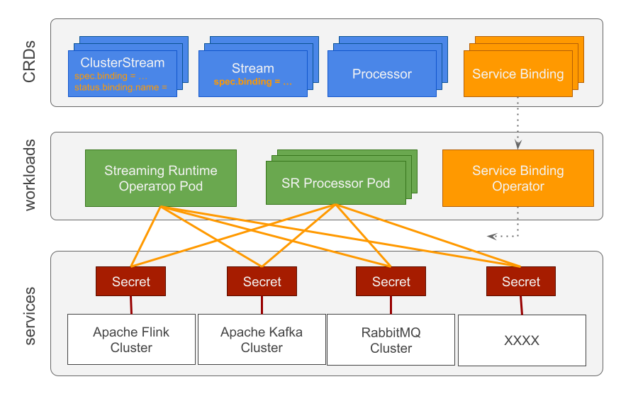

Service Binding
Overview
To fulfil its tasks, the Streaming Runtime (SR) interacts with external distributed systems such as Apache Kafka, RabbitMQ, Apache Flink and others.
This implies that SR uses credentials to access those systems.
Furthermore the SR internally exchanges status information between the managed (ClusterStream, Stream and Processor) resources and part of this information could include sensitive attributes as well.
To avoid configuring and sharing sensitive attributes in plain text the SR needs a mechanism to encapsulate and securely share such attributes amongst its managed resources.
The Service Binding Specification for Kubernetes is designed to address this problem by providing a Kubernetes-wide specification for communicating service secrets to workloads in an automated way.

The ClusterStream CRD offers a dedicated storage.server.binding attribute that can be used to refer to an existing Service Binding Service (e.g. secrets).
apiVersion: streaming.tanzu.vmware.com/v1alpha1
kind: ClusterStream
metadata:
name: test-clusterstream
spec:
name: my-exchange
storage:
server:
binding: "my-service-binding-ref"
url: "http://localhost:8080"
protocol: "rabbitmq"
The ClusterStream reconciler will detect this attribute and converted it into status.binding.name in compliance with the ProvisioningService specification.
Later is picked by the Service Binding Operator. It lookups and enforces all ServiceBinding resources with service name matching the provide binding name. For example
apiVersion: servicebinding.io/v1beta1
kind: ServiceBinding
metadata:
name: streaming-runtime-rabbitmq
spec:
service:
apiVersion: v1
kind: Secret
name: my-service-binding-ref
workload:
apiVersion: apps/v1
kind: Deployment
name: streaming-runtime-processor-possible-fraud-processor
Enable Service Binding
-
Install the Service Binding Operator. Any specification compliant operator can be used but we advice for the VMWare-Tanzu operator:
-
Create Kubernetes Secrets for the protected services (e.g. Kafka, RabbitMQ …). Note: When operators are used to provision those services, later create the needed secrets automatically. Follow the service operator instructions to find the names of the generated secrets.
apiVersion: v1
kind: Secret
metadata:
name: streaming-runtime-rabbitmq-secret
type: servicebinding.io/rabbitmq
stringData:
type: rabbitmq
provider: rabbitmq
host: rabbitmq.default.svc.cluster.local
port: "5672"
# demo credentials
username: guest
password: guest
- Create
Service Bindingcontracts to bind the desired services and workloads.
apiVersion: servicebinding.io/v1beta1
kind: ServiceBinding
metadata:
name: streaming-runtime-rabbitmq
spec:
service:
apiVersion: v1
kind: Secret
name: streaming-runtime-rabbitmq-secret
workload:
apiVersion: apps/v1
kind: Deployment
name: streaming-runtime-processor-possible-fraud-processor
env:
- name: SPRING_RABBITMQ_PASSWORD
key: password
- name: SPRING_RABBITMQ_USERNAME
key: username
- Add binding attribute to
Streamresource to refer the service secret name
apiVersion: streaming.tanzu.vmware.com/v1alpha1
kind: Stream
metadata:
name: udf-output-possible-fraud-stream
spec:
name: udf-output-possible-fraud
keys: [ "card_id" ]
streamMode: [ "write" ]
protocol: "rabbitmq"
# Binding refers to a Secret with the same name. The stream controller uses this binding to configure ClusterStream's auto-creation
binding: "streaming-runtime-rabbitmq-secret"
storage:
clusterStream: "udf-output-possible-fraud-cluster-stream"
Future Work
The Streaming Runtime should be able to create and manage the ServiceBinding objects internally